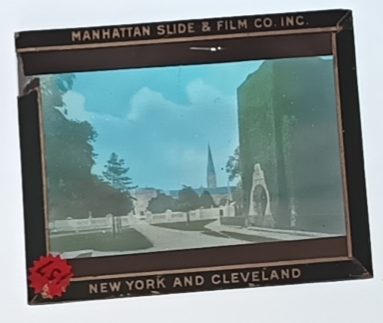
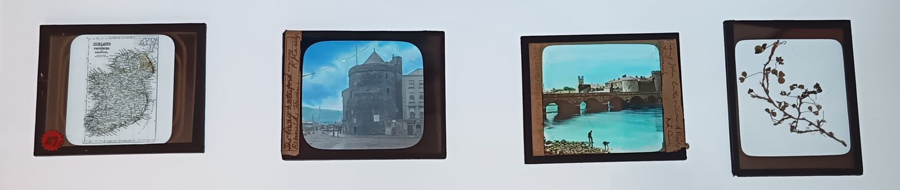
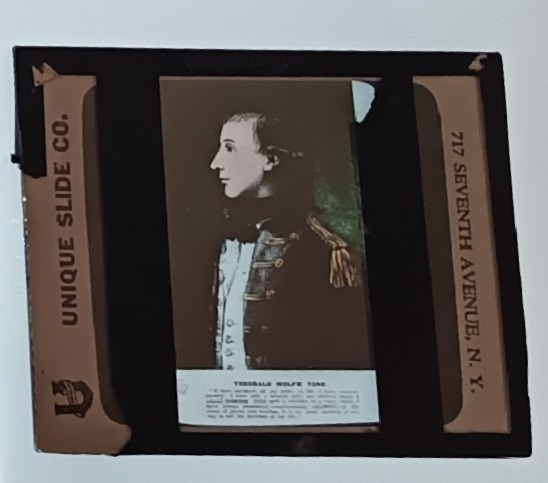
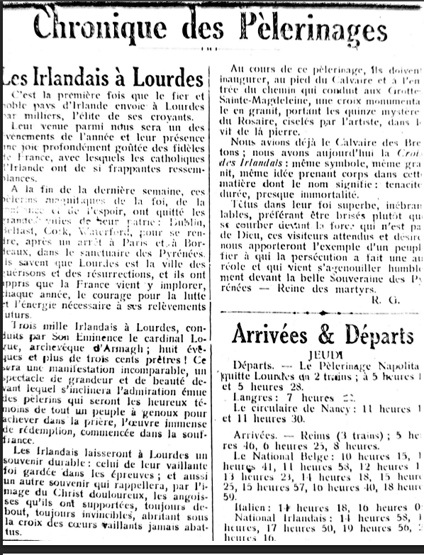
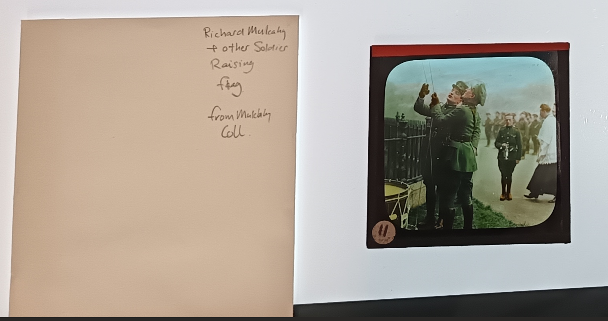

The Fr. Casey Collection

Background
After twenty-five years as a chaplain with the Irish Defence Forces, Monsignor Rev Richard J Casey moved to Skerries where he lived the remainder of his life as Parish Priest in the prosperous seaside village that was popular among flocks of holidaymakers.1 After his passing, Casey left behind him a collection of photographs and slides which he had amassed over the course of his eventful life. This collection sat in the church gallery from 1960 until the mid-1990s when the curate gave it to John Harte, of the Skerries Historical Society, and, in 1995, Harte gave the society an oral presentation on the life of Monsignor Casey, with the aid of an ancient projector which he acquired from a nonagenarian priest in Maynooth who was, curiously, also called Fr Richard Casey, and who actually made the projector himself.

I stumbled across mention of this presentation and managed to contact Mr Harte, who it turns out is still active, and has, by coincidence, been recently asked by the Honorary Secretary, Oona Roycroft, to revisit Casey’s life and to present to the society in the coming year. On the landing page of their website, https://oldskerries.ie/, you’ll find an archive image of Casey opening a festival in the town, and Harte is planning on taking the year of Our Lord, 2026, to examine more about Casey.
I am yet to meet Mr Harte in person, but we have been in touch via email and shared notes. Mr Harte was not aware of the Monsignor’s scrapbook in the Waterford County Museum, and was delighted to hear of it. And I had not been aware of Casey’s photo collection which Mr Harte had since donated to the National Photography Archive (NPA). The photo collection “spanned most of [Casey’s] life including Maynooth, New York, the Army, Pilgrimages to Lourdes, his photography, and his time in Skerries.”
So before Christmas, I contacted the NPA, and have since been in contact with archivist Nora Thornton, who has since found time to sift through the collection and label what she could. In the process she has named it the Fr Casey Collection (with the Catalogue ID: NPA FCAS), although I wish it had ovbeen The Monsignor Casey Collection. The collection is a mix of photographs, glass negative slides and positive lantern slides, a very lovely little format which I was not previously aware of yet they are extremely modern in their feel.
Lantern Slides

Lantern slides are little square(ish) peices of glass which can be viewed without projection as they are positives, not negatives. They are, at most, 3 inches square, although it is hard to make out great detail. They were created by specialist companies, and in the example above it was The Manhatten Slide & Film Co Inc, who added artificial colour to the original black and white photos, just as we might use an AI tool to recreate the colour in our old photos and videos. The slides in the collection were made by many different companies – which we know because their names are branded into the frame around the image – and this suggests Casey was all the time amending his presentations, adding to his collection.
Nora tells me that lantern slides were used for a range of familiar practices, mostly education and exhibitions. They would have been common in universities and perhaps the wealthier schools, and also used by rich people to show off their holiday snaps, just as we would do online nowadays. They were particularly popular for religious instruction, which might be why Casey was so familiar with the practice, making a simple shift from teaching his flock towards lecturing them on political revolution.
The image above is of Maynooth Seminary, where Casey was ordained and where his slightly younger namesake was resident. I suspect that lantern slides must have been in use in the university when the unrelated Caseys were students and that might be how our Casey developed his gra for the format. It should also be noted that, even by 1905, the vast majority of Maynooth graduates were Sinn Fein supporters, according to a report in his scrapbook, so the slides might have even then been used for political purposes, a practive Casey himself was soon to adopt.
The full collection

The process of examining the collection is slow and I was not allowed to handle the photos or slides. Nora had to use gloves and she placed them in a backlit screen for me to view and photograph. This process meant I couldn’t just dig through the crates of slides like a DJ collecting records, searching for hidden gems. Nora had not yet been through the entire collection, nor put them all into protective envelopes, and it was only when I lobbed her archivist’s record (bottom of this page) into a Large Language Model that I realised there were actually 427 lantern slides and 257 glass negatives. Comtemporary reports from New York said Casey had about 200 slides, so he must have continued amassing them for quite some time after he came home.
Regardless, we had to prioritise, so I told her to focus on how Casey presented the Auld Sod to his American audiences during his time there (1915-1920). His work was part of an effort to drum up support – and funding – for the Freedom Fighters back home, and I wanted to know how he did it.
Beautiful Ireland

The slides that Casey chose portray a land of “emerald hills, the castles of ancient prestige, as well as the modern cities, towns, people and social customs of the old land’, according to one contemporary newspaper report. We have a map of the unpartitioned island, some shrivelled up shamrocks, and meticulously preserved castles dating from an ancient time that must have seemed barely fathomable to his New World audience. There’s The Rock of Cashel, a round tower on Devinish Island in Fermanagh, and the rope bridge near the Giant’s Causeway. Casey includes some images of County Watarford, including the Historic Town of Lismore, Reginald’s Tower in Waterford City, and his own parish church in Dungarvan. There’s an image of a thatched cottage and one (I didn’t see) of Croagh Patrick, a pilgrimage site. There’s a notable lack of barren wild landscapes of the kind Americans like to visit nowadays (e.g. the Ring of Kerry, The Burren, Donegal, etc). There is one of Kilkee in West Clare but I see it either so I don’t know if it’s a photo of the town or the nearby landscapes.
Friends of Irish Freedom

It is interesting to note Casey’s choice of rebels and reformers. One slide shows Wolfe Tone, who led the failed rebellion of 1798. Another shows the Wicklow Parliamentarian, Charles Stewart Parnell, his deceased body lying in state. Finally, there is bronze statue of Fr William Casey in Abbeyfeale, Co. Limerick, the “peoples’ priest”. This Casey – who is also no relation to our subject – must have functioned as quite the role model for our Richard. He was a Gaelgeoir, a musician, a GAA man, and temperance activist, which I suspect Fr Richard was too. Fr William was most active in the Land League, for which he gained huge local support, and so too was Fr Richard’s uncle – another Fr Richard J Casey – to whom I shall one day return. There are no slides related to the Fenian Uprising of 1867, even though its veteran John Devoy had become the leading Republican in New York by the time of Casey’s lectures. This may be because the Fenians tried to keep a low profile and used codenames for their gatherings. Plus the audience may simply have been familiar with Devoy or the recently-deceased O’Donovan Rossa, and would thus have had no need to slides of them.
In my next post, we will see that Casey’s talks may have been part of a series of covert funding campaigns for the Revolution.. For example. one 1919 soirée saw both a céilidhe and Casey’s (music-filled) presentation. It was held by the Gaelic Society in New York. We shall also see newspaper reports of how Casey’s was not afraid to include his thoughts on the English oppressors of the Irish people.
Lourdes

In 1913, Casey also seems to have been part of very large group of Irish pilgrims to Lourdes: 3000 in total, including 300 priests and another 200 with a religious affiliation, according to the newspaper clippings above, one in French and one in English, and both of which Casey had upscaled into a lantern slide. This pèlerinage seems to have been one of the events of the year for the Lourdais and it would have been quite the journey for the pilgrims on the boat and train. It would no doubt have been quite the badge of honour in New York too. Even today my parents are very proud of their visit to the miraculous site – although they did cycle there (and back) from Paris during their 1990s cycling-getaway heyday.

There are plenty of photos taken in Lourdes do but I never got to see them. I had it in my head Casey went later but perhaps he went several times, as has since become common. I used to live beside two spinster sisters, just off Meath St, and they had then been volunteering on trips to Lourdes for 25 uninterrupted years, and their living room contained a shrine full of tat. I must drop in some time, armed with a bottle of their beloved vodka, and excavate a few stories from them.
Back in The Free State

Casey returned to Ireland in the summer of 1920 and moved to Bray soon after, before finally joining hte Defence Forces as chaplain in 1924. Before seeing the collection, I hadn’t realised that he continued to give projected talks after his return to Ireland but the age of the slides indicate that he must have. There are several slides dating from Casey’s time back in the Auld Sod, and the ones I saw relate to the newly formed Free State in the early 1920s. One shows General Richard Mulcahy hoisting the Irish flag in 1922 and one shows an aerial view of a damaged Four Courts, bombed and burnt during the Civil War. Another shows troops marching to Dolphin’s Barn Barracks from DMP Barracks (which is now the public library in an oddly vacant part of Inchicore). Another aerial shot shows President Cosgrave returning to Monkstown from a League of Nations meeting in 1923, being greeted by crowds who were clearly delighted to see the new state being recognised among the nations of the world. Casey’s scrapbook contains a flyer from April 1922 where he spoke to the Catholic Young Men’s Society on Buckingham St (on the town side of Phibsborough), but the above slides were mostly taken after that.

The Archivists’ Records

Above is the full catalogue record of the collection, with information about what is in the collection, the number of photos, slides and negatives, their condition, and the subject matter. If I can get back in with John Harte, there will be plenty more to sift through.
Yet more Caseys
Finally, I should note that, while I was the first member of the public to view the collection, I wasn’t the first to request to view it. It turns out that a genealogist called Paul O’Donnell was in touch with Nora and her colleague Barbara but Covid interrupted his efforts to view it and then, shurlook, you know yourself. So while I was in on site, Barbara found his email, contacted him with my details, and by the end of the day we had a 40 minute phone conversation about the Casey family. It turns out that O’Donnell is married to a Casey from Grawn – the crowd who moved in there after it was sold – and he has done quite a bit of work on the wider family, although his brain is fried by the incessant recurrence of people with the same name (Richard, Pierce, Michael, etc). I will write about that conversation soon, or perhaps after I trek Co Galway to find out more from him.
Footnotes
Skerries is, according to Flann O’Brien, “a small, pretty watering-place twenty miles north of Dublin with an ample, sandy strand very safe for youngsters, a spot for deep-sea swimmers on a rocky headland, and round the corner a neat little harbour”. The best known resident during Casey’s time would have been the fictional James Joyce who, according the O’Brien’s post-modern novel, The Dalkey Archive, was alive and well in the and living out his days in the town as an assistant publican, also known as a curate, a pun which leaves the fictional Joyce doubling up as assistant to the local parish Priest, our very own Very Reverand Monsignor Richard J Casey.↩︎